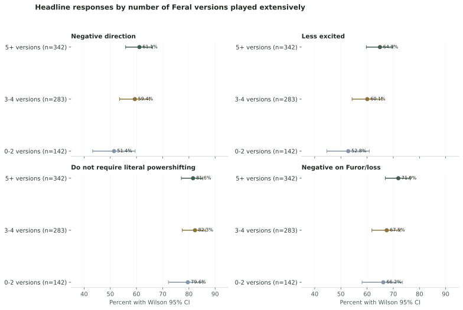

POST-PUBLICATION METHODS ADDENDUM · SEPTEMBER 21, 2026
How written feedback and player experience were examined
A reader asked which qualitative tradition informed the report and whether the headline opinions changed with familiarity or prior Feral experience. This addendum documents that follow-up. It was not preregistered and does not replace the original analysis.
What kind of qualitative analysis is this?
The report uses a pragmatic thematic analysis with descriptive content-analysis checks. The author reviewed the open responses for recurring design concerns, used deterministic phrase frequencies and topic modeling to expose repeated language, applied transparent rule-based mention categories to the core themes, and selected complete permission-checked quotations to illustrate viewpoints already visible in the aggregate results.
It is not grounded theory, because the project does not claim to develop a new formal theory through iterative theoretical sampling. It is not interpretative phenomenological analysis, which would normally use detailed individual accounts and a much smaller purposive sample. It is also not a formal multi-coder qualitative study: there was no independent second coder, adjudication process, or inter-rater reliability statistic.
The automated categories are best treated as audit aids, not substitutes for interpretation. Rule-based theme counts can miss paraphrases and mishandle negation. Topic-model shares describe language patterns, not the percentage of respondents endorsing a position. Quotations provide context, not prevalence.
Experience was treated as exposure, not verified expertise
Q2 asked which versions of Feral respondents had played extensively and allowed multiple selections. For this extension, the number selected was used as a transparent measure of exposure breadth: 0 to 2 versions, 3 to 4 versions, or 5 or more versions. The separate “limited prior Feral experience” choice was not counted as a played version. These cut points were chosen after publication for readable groups of adequate size, so they are exploratory rather than preregistered.
Q4 self-described experience and Q1 familiarity with the revealed Forever design were kept separate. The combined profiles below pair version breadth with self-described competitive or organized-raiding experience. None of these variables verifies skill, knowledge, performance, account history, or competitive level.

| group | outcome | count | denominator | percent | ci_low | ci_high |
|---|---|---|---|---|---|---|
| 0-2 versions | Negative direction | 73 | 142 | 51.4 | 43.3 | 59.5 |
| 0-2 versions | Less excited | 75 | 142 | 52.8 | 44.6 | 60.8 |
| 0-2 versions | Do not require literal powershifting | 113 | 142 | 79.6 | 72.2 | 85.4 |
| 0-2 versions | Negative on Furor/loss | 94 | 142 | 66.2 | 58.1 | 73.5 |
| 3-4 versions | Negative direction | 168 | 283 | 59.4 | 53.6 | 64.9 |
| 3-4 versions | Less excited | 170 | 283 | 60.1 | 54.3 | 65.6 |
| 3-4 versions | Do not require literal powershifting | 233 | 283 | 82.3 | 77.5 | 86.3 |
| 3-4 versions | Negative on Furor/loss | 191 | 283 | 67.5 | 61.8 | 72.7 |
| 5+ versions | Negative direction | 209 | 342 | 61.1 | 55.8 | 66.1 |
| 5+ versions | Less excited | 222 | 342 | 64.9 | 59.7 | 69.8 |
| 5+ versions | Do not require literal powershifting | 279 | 342 | 81.6 | 77.1 | 85.3 |
| 5+ versions | Negative on Furor/loss | 246 | 342 | 71.9 | 66.9 | 76.4 |
What the extension adds
The central powershifting distinction is unusually stable across exposure breadth. 79.6% of the 0 to 2 version group, 82.3% of the 3 to 4 version group, and 81.6% of the 5 or more version group did not require literal powershifting. Negative reaction to the revealed Furor and powershifting change ranged from 66.2% to 71.9%.
Negative reaction to the overall direction rose from 51.4% among respondents reporting 0 to 2 extensively played versions to 61.1% among those reporting at least 5. This is a descriptive pattern, not evidence that playing more versions caused the opinion.
The omnibus exposure-breadth tests did not retain evidence of an association after correcting the four planned comparisons for multiple testing. Adjusted p-values were 0.172 or greater, and all Cramér’s V effect sizes were 0.091 or smaller. In practical terms, version breadth did not overturn the report’s central findings.
Familiarity with the revealed design
The test-build group and the reviewed-or-discussed group were compared on the same four outcomes. Respondents who had played the test build were less negative toward the overall direction (53.4%) than those who had reviewed or discussed it without reporting test-build play (66.5%). The adjusted association was small (Cramér’s V 0.132), and both groups still contained a majority reporting a negative reaction.
Familiarity did not materially alter the distinction between restoring literal powershifting and preserving its function. The adjusted test for “do not require literal powershifting” was p=0.621 with Cramér’s V 0.018.
| outcome | groups_compared | n | chi_square | degrees_freedom | p_value | cramers_v | bh_adjusted_p |
|---|---|---|---|---|---|---|---|
| Negative direction | Played test build | Reviewed/discussed only | 739 | 12.8600 | 1 | 0.0003 | 0.1319 | 0.0013 |
| Less excited | Played test build | Reviewed/discussed only | 739 | 11.1317 | 1 | 0.0008 | 0.1227 | 0.0016 |
| Do not require literal powershifting | Played test build | Reviewed/discussed only | 739 | 0.2451 | 1 | 0.6205 | 0.0182 | 0.6205 |
| Negative on Furor/loss | Played test build | Reviewed/discussed only | 739 | 10.5448 | 1 | 0.0012 | 0.1195 | 0.0016 |
Combined self-report and version-exposure profiles
This table is descriptive. It shows whether broad version exposure changes the result within the two largest self-described experience groups. The “other” category combines smaller groups to protect readability and avoid presenting unstable estimates as distinct findings.
| group | outcome | count | denominator | percent | ci_low | ci_high |
|---|---|---|---|---|---|---|
| Competitive, 0-4 versions | Negative direction | 123 | 182 | 67.6 | 60.5 | 74.0 |
| Competitive, 0-4 versions | Less excited | 126 | 182 | 69.2 | 62.2 | 75.5 |
| Competitive, 0-4 versions | Do not require literal powershifting | 146 | 182 | 80.2 | 73.8 | 85.4 |
| Competitive, 0-4 versions | Negative on Furor/loss | 144 | 182 | 79.1 | 72.6 | 84.4 |
| Competitive, 5+ versions | Negative direction | 152 | 236 | 64.4 | 58.1 | 70.2 |
| Competitive, 5+ versions | Less excited | 157 | 236 | 66.5 | 60.3 | 72.2 |
| Competitive, 5+ versions | Do not require literal powershifting | 192 | 236 | 81.4 | 75.9 | 85.8 |
| Competitive, 5+ versions | Negative on Furor/loss | 175 | 236 | 74.2 | 68.2 | 79.3 |
| Regular raider, 0-4 versions | Negative direction | 96 | 186 | 51.6 | 44.5 | 58.7 |
| Regular raider, 0-4 versions | Less excited | 95 | 186 | 51.1 | 43.9 | 58.2 |
| Regular raider, 0-4 versions | Do not require literal powershifting | 156 | 186 | 83.9 | 77.9 | 88.5 |
| Regular raider, 0-4 versions | Negative on Furor/loss | 114 | 186 | 61.3 | 54.1 | 68.0 |
| Regular raider, 5+ versions | Negative direction | 54 | 99 | 54.5 | 44.8 | 64.0 |
| Regular raider, 5+ versions | Less excited | 62 | 99 | 62.6 | 52.8 | 71.5 |
| Regular raider, 5+ versions | Do not require literal powershifting | 81 | 99 | 81.8 | 73.1 | 88.2 |
| Regular raider, 5+ versions | Negative on Furor/loss | 68 | 99 | 68.7 | 59.0 | 77.0 |
| Other/self-described casual or newer | Negative direction | 25 | 64 | 39.1 | 28.1 | 51.3 |
| Other/self-described casual or newer | Less excited | 27 | 64 | 42.2 | 30.9 | 54.4 |
| Other/self-described casual or newer | Do not require literal powershifting | 50 | 64 | 78.1 | 66.6 | 86.5 |
| Other/self-described casual or newer | Negative on Furor/loss | 30 | 64 | 46.9 | 35.2 | 58.9 |
Inferential boundary
Pearson chi-square tests evaluate whether each binary outcome differs across the listed groups inside this dataset. Benjamini-Hochberg adjusted p-values control the false-discovery rate across the four planned outcomes within each family of comparisons. Cramér’s V describes association strength. Wilson intervals describe uncertainty around each proportion.
A structural equation model was not fitted. The survey was not designed around validated multi-item measures of latent concepts, and the designer-facing question is whether the observed headline opinions remain stable across experience groups. A more complex latent-variable model would not correct the voluntary sample or turn self-reported experience into verified expertise.
These tests do not make the survey representative. Recruitment was voluntary, the sample is self-selected, the exposure measures are retrospective self-reports, and the extension was designed after seeing the original report. P-values cannot remove those limitations. The tests are included as a sensitivity check, not as population estimates or causal evidence.
| outcome | groups_compared | n | chi_square | degrees_freedom | p_value | cramers_v | bh_adjusted_p |
|---|---|---|---|---|---|---|---|
| Negative direction | 0-2 versions | 3-4 versions | 5+ versions | 767 | 3.9846 | 2 | 0.1364 | 0.0721 | 0.2728 |
| Less excited | 0-2 versions | 3-4 versions | 5+ versions | 767 | 6.2893 | 2 | 0.0431 | 0.0906 | 0.1723 |
| Do not require literal powershifting | 0-2 versions | 3-4 versions | 5+ versions | 767 | 0.4791 | 2 | 0.7870 | 0.0250 | 0.7870 |
| Negative on Furor/loss | 0-2 versions | 3-4 versions | 5+ versions | 767 | 2.1851 | 2 | 0.3354 | 0.0534 | 0.4471 |